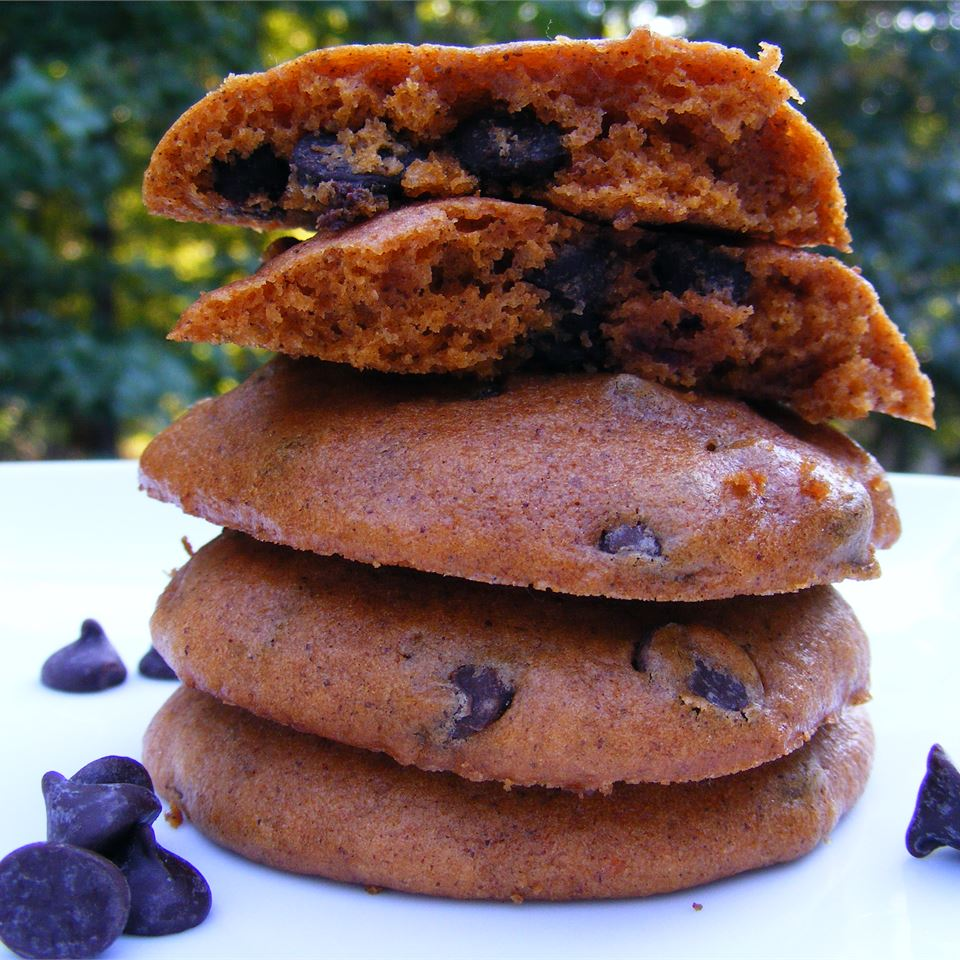

Pumpkin Chocolate Chip Cookies

Description
This recipe is for pumpkin chocolate chip cookies. As a pumpkin recipe lover,
I can say these cookies taste great. Combining both chocolate and pumpkin to
form a very delicious dessert.
Ingredients
- 1 cup canned pumpkin
- 1 cup white sugar
- 1/2 cup vegetable oil
- 1 egg
- 2 cups all-purpose flour
- 2 teaspoons baking powder
- 2 teaspoons ground cinnamon
- 1/2 teaspoonsalt
- 1 teaspoon baking soda
- 1 teaspoon milk
- 1 tablespoon vanilla extract
- 2 cups semisweet chocolate chips
- 1/2 cup chopped walnuts
Steps for preparing and baking
- Combine pumpkin, sugar, vegetable oil, and egg. In a separate bowl, stir
together flour, baking powder, ground cinnamon, and salt. Dissolve the baking
soda with the milk and stir in. Add flour mixture to the pumpkin mixture and mix well
- Add vanilla, chocolate chips, and nuts
- Drop, by spoonful, on greased cookie sheet and bake at 350 degrees F (175 degrees
C) for approximately 10 minutes or until lightly brown and firm
Return to main page